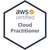
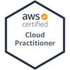

Nick Gumbs

Nick Gumbs

Baltimore, MD | 240-437-7049 | nickgumbs@gmail.com |
Aspiring QA Engineer with demonstrated serverless, cloud, and automation experience. Dedicated team player with exceptional leadership and communication skills proven through my career as a student-athlete at UMBC.
- Skills
-
Technical skills
Programming/Scripting: Python, HTML, CSS, SQL, Javascript, C++
AWS: S3, Lambda (boto3), DynamoDB, API Gateway, CloudFormation, Route53
Office: Microsoft Product Suite, Adobe Creative Suite
- Projects
-
Gumbs.Website
- Created S3 hosted static site using Cloudfront cache with integrated CI/CD pipeline using Github Actions
- Used AWS SAM template to leverage Lambda (boto3), and API Gateway for backend infrastructure
- HTML, CSS, Python, Javscript, YAML
Retreiever Essentials
- Refined portal through which meals are donated to Retriever Essentials (UMBC campus food bank) leading to increased ease of use and student awareness
- Interviewed administrators to understand client requirements and students to develop relevant user stories
- SDLC, Data Analysis
- Education
-
University of Maryland, Baltimore County
Major: Information Systems May '20
Minor: Entrepreneurship and Innovation
Honors: Magna Cum Laude (3.72 GPA)
- Experience
-
David Associates and Co. Ltd
Accounting Intern - London, England Summer '18
- Improved and reconstructed credit and debit records by optimizing the recording system
- Reviewed and maintained all vouchers, check payments, and receipts for external auditing purpose
- Developed and exhibited coachability by incorporating managerial feedback into my work
- On a day-to-day basis, demonstrated adaptability and learning agility when completing assigned tasks
- Excel, Word
Student Athletic Advisory Committee
Team Representative - Baltimore, MD Fall '16 - Spring '20
- Advocated concerns from student-athletes to upper-level administrators creating a better environment for current and future students
- Assisted in coordinating events to bring together athletes outside of the athletic arena to promote cohesiveness, team bonding, and school spirit
- Div 1 Athletics
-
UMBC Varsity Soccer
- Participated in 20 hours per week of practice/games during NCAA season
- Effectively communicated with coaches and teammates to meet established goals as team captain
- Developed a coachable, accountable, and results-oriented attitude
- Accomplishments:
- 2019 America East All-Academic Team
- 2019 Promoted to Team Captain
- Interests
-
Movies, Animation, Reading, Soccer
Currently Learning: Selenium and Web Automation
Currently Reading: Dune by Frank Herbert
Currently Watching: Veep
For pdf version click
HERE
!